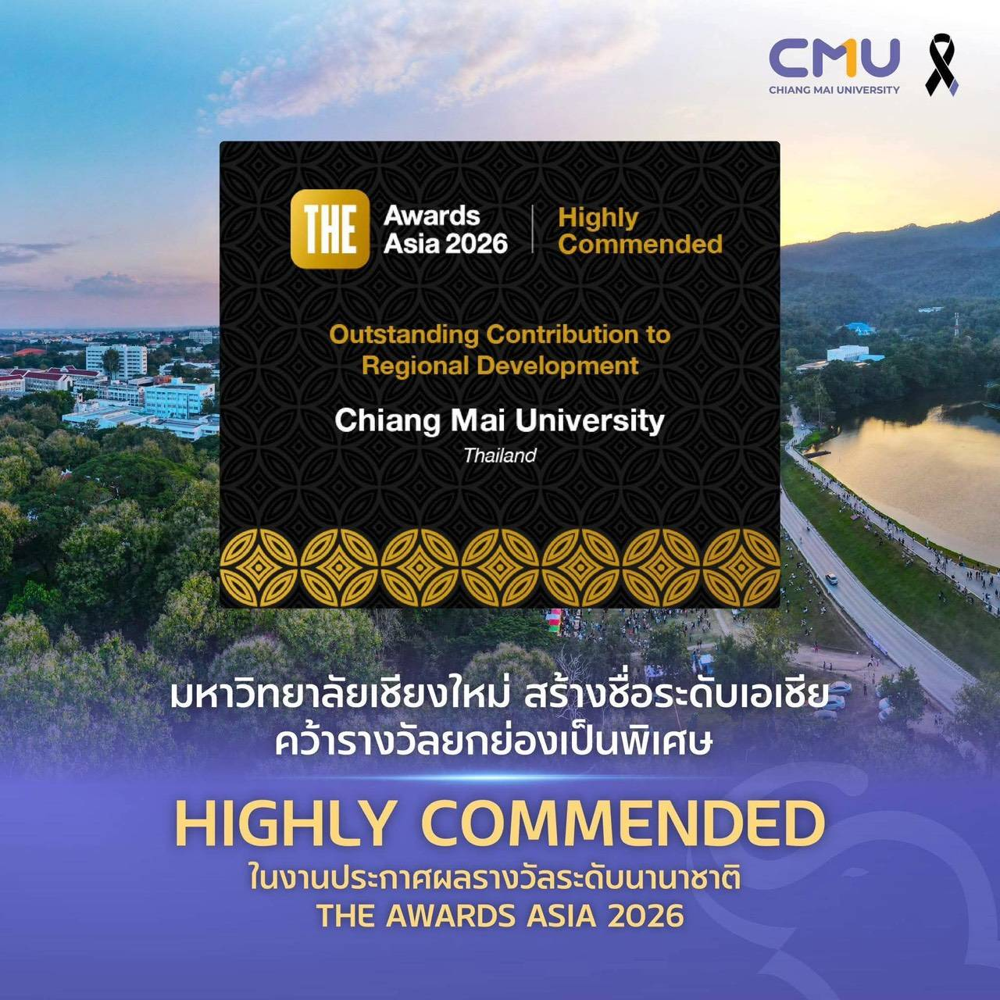
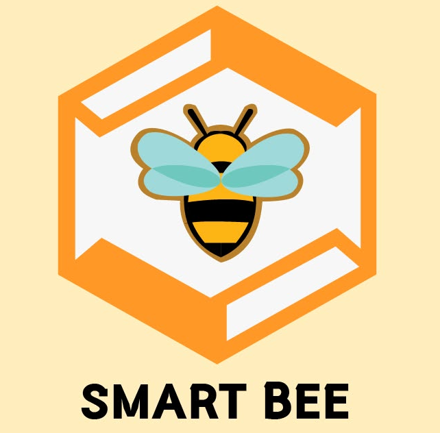
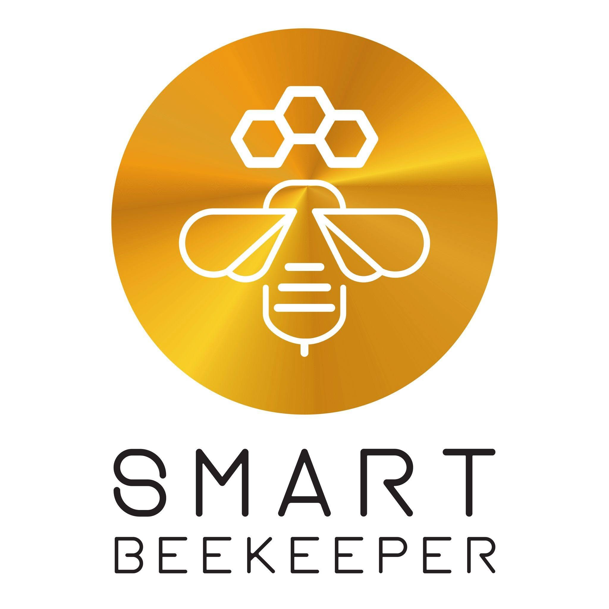
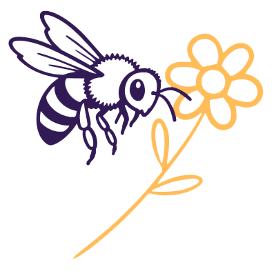
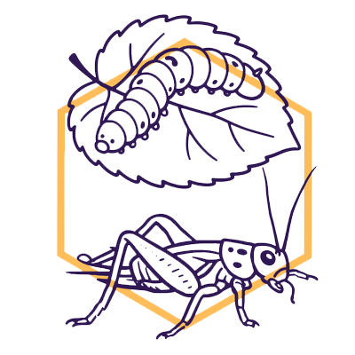
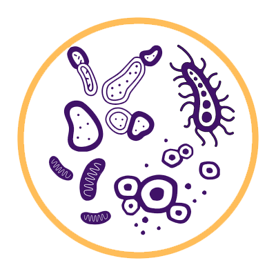
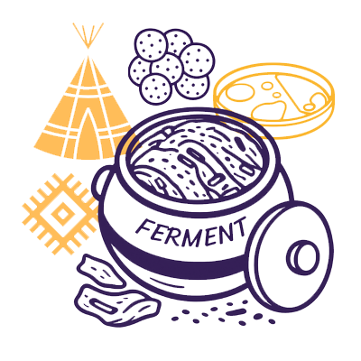
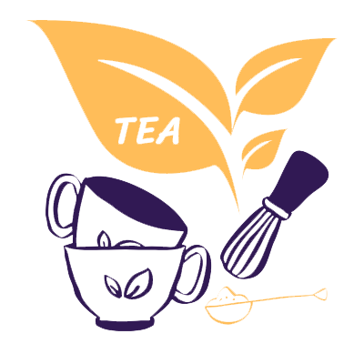
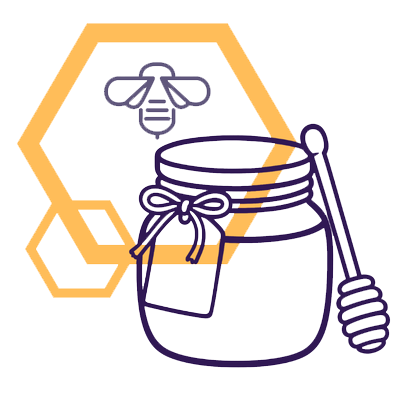

International Award
Received a "Highly Commended" distinction at the international Times Higher Education (THE) Awards Asia 2026 in the "Outstanding Contribution to Regional Development" category.
A Research Center of Deep Technology in Beekeeping and Bee Products for Sustainable Development Goals, Chiang Mai University


The SMART BEE SDGs Research Center was established in 2010 by Professor Dr. Panuwan Chantawannakul. Initially named “SMART Beekeepers,” the Center was founded with a vision of improving the quality of life of Thai beekeepers through multidisciplinary science, innovation, and community engagement.
Professor Panuwan earned her bachelor's degree from Chiang Mai University and her Ph.D. from Cardiff University, United Kingdom. She was a founding member of the COLOSS Association and later served as its Vice President. Recognized among the world’s top 2% of scientists in entomology, she was internationally renowned for her pioneering research on bee health and received numerous awards at both national and international levels.
Professor Panuwan passed away in March 2022, but her vision continues through her research, colleagues, students, and the communities she inspired. We remain committed to carrying forward her passion for bees and her dedication to using science to improve people's lives.
Forever Our Bee Queen
We will always remember and deeply miss our beloved “Bee Queen.”

Professor Dr. Panuwan Chantawannakul Founder, established in 2010
Our research brings together microbiology, ecology, biodiversity, food and fermentation, environmental systems, ethno-microbiology, heritage science, technology, and sustainable development.

Bee Biology &
Edible Insects
Microbiome
Ethno-microbiology
Tea Science
Our ProductsOur research focuses on research and innovation in bees and edible insects, from biology, biodiversity, health, and ecology to sustainable production and utilization. We combine scientific research with practical applications to support beekeepers and edible-insect farmers in improving farming practices, product quality, and value-added products.
Our work includes bee health and disease monitoring, bee conservation and protection, sustainable beekeeping, and honey quality assessment to support healthy bee populations and high-quality honey production.
We also explore bee- and insect-associated microorganisms, nutrition, cultivation, and innovative insect-based products. Through research, technology, and collaboration, Smart Bee Lab aims to develop sustainable solutions that benefit farmers, consumers, communities, and the environment.

The SmartbeeSDGs Lab is a highly interdisciplinary space where biologists, microbial ecologists, geneticists, entomologists, and engineers work together on bees, insects, and ecology.
For more information or need help, please contact us.
Email: smartbee2704@gmail.com